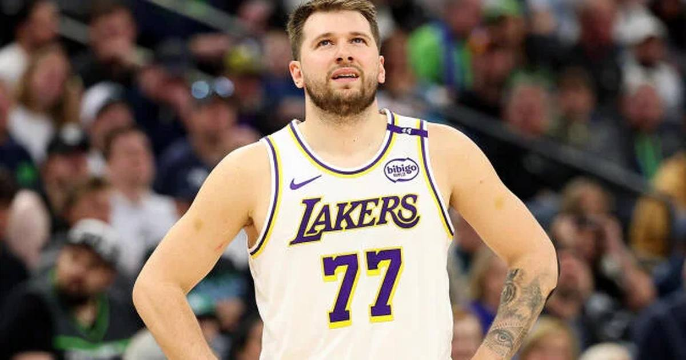

Luka Doncic's First 50-Point Game of the NBA Season Keeps Lakers at 3-0
Luka Doncic scored 52 points as the Lakers beat the Utah Jazz on Sunday, the first 50-point game of the NBA season — and a first in Lakers history.

Disclosure: this post contains affiliate links. I earn a commission on qualifying purchases.
Luka Doncic scored 52 points as the Los Angeles Lakers beat the Utah Jazz on Sunday. The win keeps the Lakers perfect at 3-0, and Doncic's night was the first 50-point game of the NBA season.
A historic stat line
The scoring alone would have been enough. What makes the night historic is the full line: it was the first time a Laker had recorded at least 50 points, 10 assists, five rebounds and five three-pointers in a single game.
Points: 52
Assists: At least 10
Rebounds: At least five
Three-pointers: At least five
Lakers record: 3-0
Why it matters
Fifty-point games are rare enough on their own. Pairing one with double-digit assists and five-plus threes puts Doncic's night in its own category in Lakers history — no Laker had ever put together that exact combination before. And it came in a win that kept Los Angeles unbeaten to start the season.
Three games in, Doncic has already delivered the season's first 50-piece. The Lakers are 3-0, and their star is setting the early pace for the league's scoring race.
Watch
Source: Luka Doncic Drops 52 POINTS! 🤯 Lakers vs Jazz | Doncic Highlights #shorts (YouTuberMan TNT). The clip shows Doncic's 52-point scoring performance against the Jazz.
Gear up: Fanatics